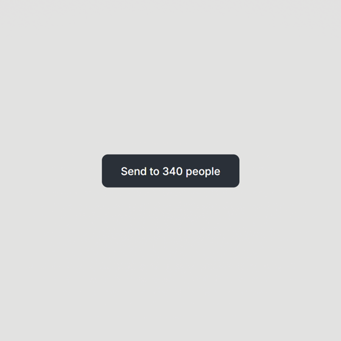
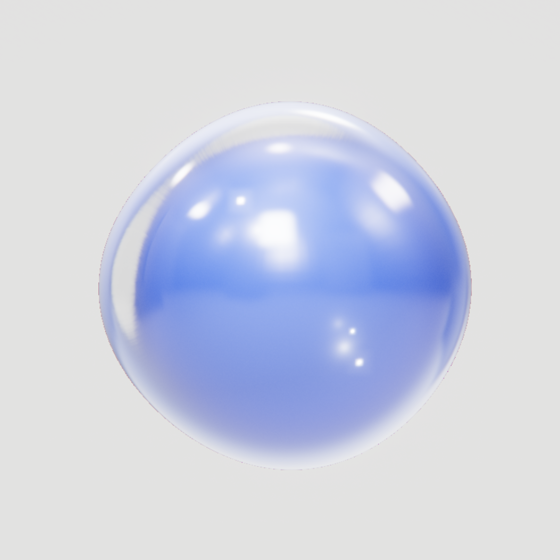
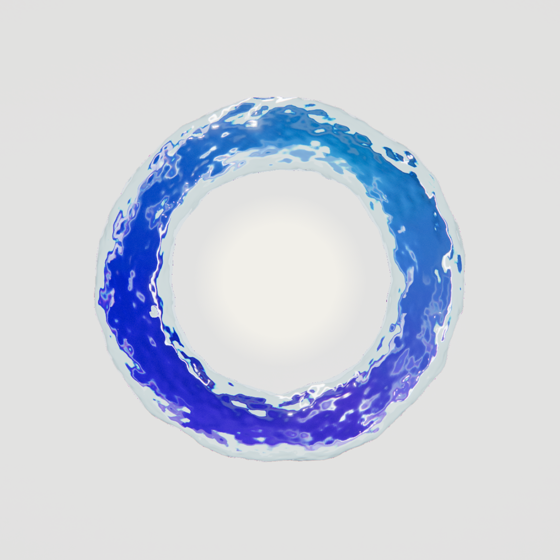

DWELL · Three conditions
Same send, three gates.
Send it each way, in order. The page times how long you stay with who it reaches.

1
No friction

2
Screen friction

3
Tangible
Try the live comparison
→
About a minute · works with mouse, touch or keyboard